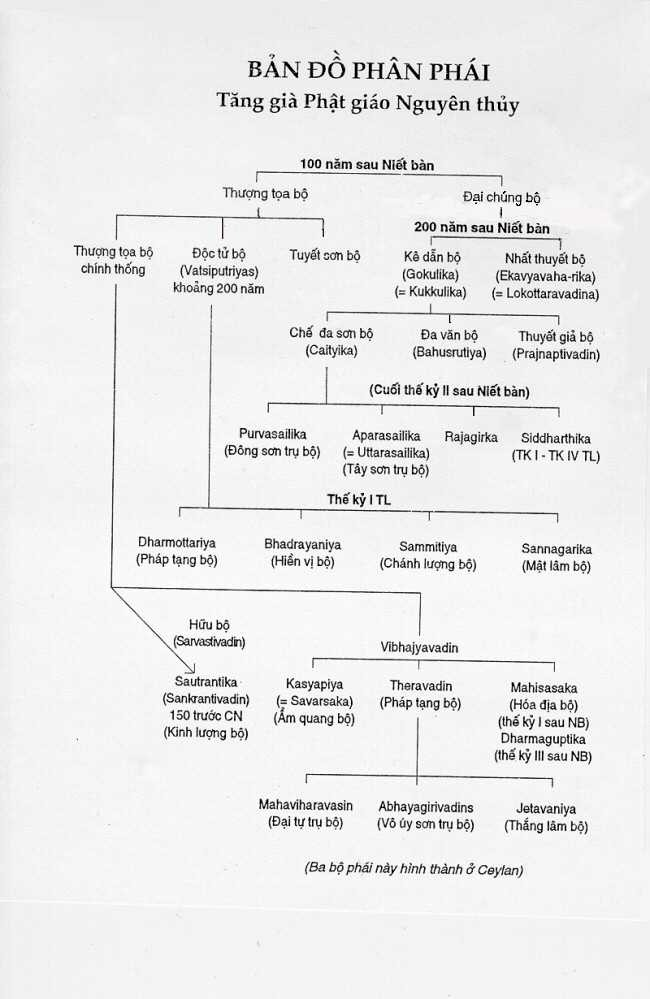

BuddhaSasana
Home Page
This document is written in Vietnamese, with Unicode Times
font
Ban Hoằng pháp
Trung ương, GHPGVN
Phật Học Cơ Bản - Tập Hai
Phần II - Bài đọc thêm Lý do Phân phái và tình hình Phân phái trong đạo PhậtMinh ChiA- Tình hình chung Sự phân phái đã từng xảy ra hai lần trong thời kỳ Phật còn tại thế. Lần phân phái thứ nhất ở Kausambi được giải quyết nhanh chóng. Lần phân phái thứ hai, do Devadatta chủ xướng, dẫn tới thành lập một bộ phái riêng rẽ, mà đến thế kỷ thứ VII, khi Huyền Trang qua Ấn Ðộ vẫn còn ghi tiếng vang. Dưới thời vua Asoka (300 trước CN), Phật giáo tuy đại thịnh, nhưng nội bộ Phật giáo đã có sự chia rẽ nghiêm trọng, mà Asoka có nói tới trong các trụ đá ở Kosambi, Sanchi và Sarnath. Trong các trụ đá, Asoka đe dọa sẽ tẩn xuất khỏi Tăng chúng tất cả những ai chủ xướng chia rẽ và phân phái. Nhưng cũng dưới thời Asoka đã xảy ra lần phân phái nghiêm trọng và lớn nhất, khiến tách ra bộ phái Ðại chúng bộ (Mahasanghika) chiếm số đông, tán thành 5 điểm của Mahadeva (Ðại Thiên), đối lập với Thượng tọa bộ, thiểu số và có tư tưởng bảo thủ. Ngay ở Sri Lanka, nơi truyền giáo của Mahinda cũng không tránh được sự phân phái. Các Tăng sĩ của tu viện lớn Mahavihara, dưới triều vua Dutthagamani tách khỏi bạn đồng tu mà lập ra ở Abhayagira một đồ chúng mới, cắt đứt mọi quan hệ với Tăng chúng ngày trước do chính Mahinda thành lập. Thời ấy, người ta phân biệt rõ hai khái niệm: phân phái (samghabheda) và chia rẽ (samgharaji). Sự phân phái xảy ra khi có ít nhất là 9 Tỷ kheo, sinh hoạt trong một hội chúng tại cùng một địa phương, nhưng có một số quan điểm khác biệt về Luật hay Pháp, so với quan điểm truyền thống của hội chúng, và sau một cuộc bỏ phiếu tổ chức theo đúng Luật, bèn tách khỏi hội chúng đó và tiến hành riêng rẽ lễ bố tát và một số Phật sự khác. Nếu số Tỷ kheo không đến 9 người, thì không phải là phân phái mà là chia rẽ. Chính thể theo một cuộc bầu phiếu đúng luật mà Ðại chúng bộ hình thành và tách khỏi Thượng tọa bộ. Và sau một thời gian, cả hai bộ phái chính nói trên lại tách ra nhiều bộ phái khác với những quan điểm khác nhau về một hay một vài điểm trong Luật và Pháp. Không bao lâu, con số bộ phái lên đến 20, kể cả hai bộ phái chính Ðại chúng bộ và Thượng tọa bộ. Quá trình phân phái nhiều khi xảy ra một cách tự phát, do địa bàn Phật giáo mở rộng ra khắp đất nước Ấn Ðộ, rồi vượt biên giới Ấn Ðộ, lan rộng nhiều vùng khác nhau trên thế giới. Có thể nói, phân phái là hệ quả không thể tránh của sự phát triển của đạo Phật trong không gian và thời gian. Không gian mới, thời gian mới khiến nảy sinh ra những nhu cầu mới về tâm linh, về tri thức trong dân chúng nói chung cũng như trong Phật giáo đồ nói riêng. Sự phân phái thể hiện yêu cầu cập nhật hóa và bản địa hóa của Phật giáo. Ðể khỏi bị lạc hậu so với thời thế, đạo Phật phải cập nhật hóa, hiện đại hóa. Ðể tránh khỏi mâu thuẫn, xung đột với truyền thống văn hóa, tập tục và tín ngưỡng địa phương, Phật giáo bắt buộc phải bản địa hóa. Hoàn cảnh địa lý, chính trị xã hội, kinh tế rất đa dạng của các vùng mà Phật giáo mới du nhập vào đặt ra cho những người lãnh đạo Tăng chúng ở các vùng khác nhau hàng loạt vấn đề mới phải giải quyết. Thí dụ có những vùng điều kiện sinh hoạt dễ dàng. Tăng chúng có thể rất đông đảo và sống dựa một chiều vào sự cúng dường của thập phương; nhưng cũng có những vùng điều kiện sinh hoạt rất khó khăn, Tăng chúng phải tự tăng gia và nuôi sống mình, hoặc một phần hoặc toàn bộ. Có những vùng và quốc gia, trong đó chính quyền ủng hộ Phật giáo. Nhưng có những vùng chính quyền công khai chống đối Phật giáo. Cũng có những vùng chính quyền giữ thái độ trung lập đối với các tôn giáo và hệ tín ngưỡng khác nhau. Có những nước, những vùng vốn là cái nôi của một nền văn minh và văn hóa lâu đời, có tiếng tăm, như Trung Quốc, v.v... Nhưng cũng có những vùng, dân chúng sống rất lạc hậu, mù chữ, có thể nói là trong tình trạng dã man, hay bán khai. Có những vùng có khí hậu rất khắc nghiệt, quanh năm chỉ là băng tuyết, hay là có địa hình hiểm trở, giao thông đi lại khó khăn, hay chỉ là sa mạc cát nóng v.v... Ðạo Phật muốn du nhập và tồn tại, phát triển tại những vùng khác nhau như thế, chắc chắn là không thể giữ nguyên tình trạng và tổ chức như khi còn ở vùng trù phú của trung châu sông Hằng. Ở Ấn Ðộ, thời bấy giờ, tuy có tình trạng phân phái, thế nhưng giữa các bộ phái, quan hệ vẫn là quan hệ giữa những người đồng đạo, những người con Phật. Khi Huyền Trang qua Ấn Ðộ vào thế kỷ VII Tây lịch, ông có nhận xét là các Tăng sĩ Tiểu thừa giáo và Ðại thừa giáo có thể ở cùng trong một chùa, một tu viện mà không xảy ra xích mích gì. Chỉ có điều khác là Tăng sĩ Tiểu thừa thì tụng các kinh sách Tiểu thừa, còn các Tăng sĩ Ðại thừa giáo thì tụng các kinh Ðại thừa. Tăng sĩ bất cứ thuộc bộ phái nào, đều được các chùa và tu viện Phật giáo tiếp đón tử tế lịch sự, theo đúng nghi thức của Tăng đoàn. Ngày nay, chúng ta có thể biết các tình hình bộ phái Phật giáo ở Ấn Ðộ vào đầu Tây lịch qua các tác phẩm lịch sử Phật giáo, đặc biệt là cuốn "Samayabhado paracanacakra" (Dị bộ tôn luận) của Vasumitra, hay là cuốn Kathavathu, đối với một thời kỳ phân phái sớm hơn. B- Về những lý do đặt tên các bộ phái 1. Dựa vào nội dung của quan điểm giáo lý: như Sthaviravada - Thượng tọa bộ - tức là bộ phái của các vị Trưởng lão, Thượng tọa. Lokottaravada - Thuyết xuất thế bộ - là bộ phái thuyết minh những pháp siêu thế, Ekavya vaharika - Nhất thuyết bộ, Prajnaptivadin - Thuyết giả bộ - phân biệt giữa thực giáo và giả danh, Sautrantika - Kinh lượng bộ - chỉ thừa nhận giáo lý chính thống ghi trong kinh tạng. 2. Dựa vào cơ cấu của Hội chúng thành lập bộ phái: Mahasanghika - Ðại chúng bộ khẳng định tính đại chúng của hội chúng thành lập. Bahusratva (Ða văn) là bộ phái mà hội chúng thành lập gồm toàn những bậc học rộng đa văn. Dharmottarya - (Pháp thượng bộ) là bộ phái của những người đề cao giáo pháp. Bhadrayaniya - Hiền vị bộ, bộ phái của các bậc trí giả v.v... 3. Dựa vào địa bàn hoạt động của bộ phái: Haimavata (Tuyết sơn bộ) địa bàn hoạt động là vùng núi Tuyết Sơn (Himalaya), Caityasaila (Chế đa sơn bộ) có địa bàn hoạt động tại vùng núi Kaitya (ở xứ Andhra) Aparasaila - Tây sơn trụ bộ, có địa bàn hoạt động ở phía Tây dãy núi (xứ Andhra). 4. Dựa vào tên vị cao tăng sáng lập ra bộ phái: Vatsiputrya - (Ðộc tử bộ), dựa vào tên vị A la hán có tên như vậy. Mahisasaka (Hóa địa bộ), tên một người Bà la môn sáng lập có tên như vậy. Dharmaguptaka (Pháp tạng bộ) được sáng lập bởi một đệ tử của Maudgalyayana, tên là Dharmapupta. Và Sammatiya (Chánh lượng bộ) do Sammita sáng lập v.v... C- Số bộ phái thật sự có bao nhiêu? Lịch sử hình thành các bộ phái đã trải qua nhiều năm, thì các sử gia Ấn Ðộ cũng như Trung Hoa mới bắt đầu công việc thu thập tài liệu để viết về lịch sử truyền thừa các bộ phái, cũng như nội dung chủ thuyết của các bộ phái. Vì thiếu tài liệu, cho nên cái gọi là sử liệu các bộ phái, do các sử gia Ấn và Trung Hoa viết không tránh khỏi có những phần hư cấu. Các sử gia chú trọng nhiều tới lịch sử truyền thừa của các bộ phái, lịch sử đó do chính người của các bộ phái viết, do đó mà tùy theo bộ phái, lịch sử truyền thừa có điểm khác nhau. Vì ai cũng muốn nói tốt cho bộ phái mình. a/ Bảng hai bộ phái chính của sử gia Tây Tạng Taranatha: Trong cuốn lịch sử Phật giáo Ấn Ðộ, xuất bản 1968, Taranatha công bố bảng hai bộ phái chính, mà ông cho là do Thượng tọa bộ soạn: A- Mahasanghika: phân thành 8 bộ:
B- Sthavira: phân thành 10 bộ:
Bảng phân phái trên đây mà Taranatha cho là thuộc bộ phái Sthavira (hay Theravada), trùng hợp với các bảng của Vasumitra được La Thập và Chân Ðế (Paramartha) dịch ra chữ Hán, với đầu đề Dị bộ tôn luận. Bộ luận của Vasumitra cũng được Huyền Trang dịch. Bản Hán dịch của Huyền Trang được Masuda dịch ra tiếng Anh: Origin and Doctrines of Buddhist Schools (Asia Major II 1925, p.I-78, cũng được A.Barreau dịch ra tiếng Pháp Trois traités sur les sectes bouddhiques. J.A 1954 P.235-266). Ðệ tử của Huyền Trang là Khuy Cơ có viết cuốn "Dị bộ tôn luận thuật ký" là bản sớ giải về bản dịch của Huyền Trang, được viết theo những chỉ dẫn của Huyền Trang. Theo bản dịch của Huyền Trang thì Vadumitra phân chia các bộ phái như sau: b/ Bảng Vadumitra: A- Mahasanghika:
Cũng theo Vasumitra, chính thuyết năm điểm do Mahadeva (Ðại thiên) đề xuất vào năm 116 sau Niết bàn đã dẫn tới sự phân phái giữa Thượng tọa bộ (Sthavira) và Ðại chúng bộ (Mahasanghika). Ðại chúng bộ rút về phía Bắc thành Vương xá (Rajagrha), và đến thế kỷ II sau Niết bàn thì chia thành 4 bộ phái: Ekavyavaharika (Nhất thuyết bộ), Lokottaravadin (Thuyết xuất thế bộ), Kaukuttika (Kê dẫn bộ) và Bahusrutya (Ða văn bộ). Bốn bộ phái này đều tôn luận chủ Yajnava kya làm thầy. Ðến thế kỷ III sau Niết bàn, một cuộc chia rẽ mới dẫn tới thành lập tại vùng núi Andhra bộ phái Caityasaila (Chế đa sơn bộ), và bộ phái này lại chia làm hai Tây sơn trụ bộ và Ðông sơn trụ bộ. Trong thời gian hai thế kỷ sau Niết bàn, Thượng tọa bộ vẫn giữ được sự thống nhất nội bộ dưới sự hướng dẫn của các vị Thượng thủ tiếng tăm như các Ngài Kasyapa (Ca Diếp) Ananda (Anan), Madhyantika, Sanavasin, Upagupta, Purna, Mecaka và Katyayaniputra. Sau khi Ngài Katyayaniputra tịch, vào đầu thế kỷ III sau Niết bàn, thì Thượng tọa bộ phân làm hai nhánh:
Trong thế kỷ III và vào đầu thế kỷ IV sau Niết bàn, thì Hữu bộ Sarvastivada sinh ra bốn bộ phái mới là Vatsiputrya (Ðộc tử bộ) Mahisasaka (Hóa địa bộ), Kasyapiya (Ấm quang bộ) và Sautrantika (Kinh lượng bộ). Thành lập bộ phái Ðộc tử bộ là một Bà la môn tên là Vataiputrya, học trò của Rabula. Chính Rahula đã truyền bộ luận A Tỳ Ðàm của Xá lợi Phất (Sariputra abhdharma Vatsiputrya. Sau đó, từ Ðộc tử bộ lại nảy sinh ra bốn bộ phái mới là Dharmottarya (Pháp thượng bộ), Bhadrayaniya (Hiền vị bộ), Sammatiya (Chánh lượng bộ) và Channagirika (Mật Lâm bộ). Bộ phái Mahisasaka được thành lập bởi một Bà la môn, trước khi xuất gia có làm quan chức về địa bạ, địa chính, sau đó xuất gia, chứng quả A la hán. Một bộ phái mới, Dharmaguptaka (Pháp tạng bộ) sinh ra từ bộ phái Mahisasaka (Hóa địa bộ). Còn bộ phái Kasyapiya hay Sauvarsaka (Ấm quang bộ) là do A la hán Suvarsaka Kasyapiya thành lập. Bộ phái Kinh lượng bộ (Sautrantika) theo tên gọi của nó cho biết, chỉ công nhận tính chính thống của Kinh tạng, do Phật đích thân thuyết giảng mà thôi. c/ Bảng phân phái của Ðại chúng bộ: Bảng này thuộc Ðại chúng bộ, nhưng không rõ tác giả là ai. Bản này được dịch ra chữ Hán, giữa các năm 317 và 420. I. Ðại chúng bộ:
II. Thượng tọa bộ:
d/ Bảng phân phái, lập ra từ các kinh sách chữ Pàli: Trong tư liệu dẫn chứng, có thể kể: Dipavamsa (đảo sử), Mahavamsa, cuốn Kathavattu v.v... I. Mahasanghikas:
II. Theravada:
Về thời điểm phân phái, các tài liệu Tích Lan cho biết: 1. Trong thế kỷ đầu tiên sau Niết bàn (486-386), hiện tượng phân phái chưa xảy ra. 2. Trong thế kỷ II, tức là giữa Ðại hội kiết tập lần thứ hai, (386 trước CN hay là 100 sau NB), và Ðại hội Kiết tập lần thứ ba (256 trước CN hay 236 sau NB) có 18 bộ phái xuất hiện. 3. Trong thế kỷ III sau NB, tức từ 286 đến 186 trước CN, có 6 bộ phái mới xuất hiện và phát triển ở Ấn Ðộ: Hemavata, Rajagirya, Siddhatika, Pubbaseliya Aparaseliya và Vajiriya. Có thể đây là sáu bộ phái nhánh, tách khỏi Ðại chúng bộ năm 255 sau NB (236 trước CN), rồi sau đó tạo thành ba bộ phái mới là: Vetulya, Andhaka và Anya-Mahasamghika. 4. Năm 236 sau NB, tức 250 trước CN, Thượng tọa bộ du nhập vào Xây Lan, dưới sự chỉ đạo của Mahinda. Ðại biểu của Thượng tọa bộ ở Xây Lan là các du sĩ thuộc tu viện Mahavira, kể cả tu viện mới Mahameghavana, do vua Devanampiyatissa tặng họ. Trong khuôn viên của tu viện mới này có bảo tháp Thuparama, do vua Devanampiyatissa xây, và cây bồ đề lớn lên từ một nhánh của cây bồ đề ở Caya, do em gái của Mahinda là Sanghamitta đem sang. Có phòng làm lễ bố tát (Uposatha) do vua Dutthagamani xây cũng như bảo tháp nổi tiếng Mahathupa hay là Dagoba Ruvanveli cũng do vua này tạo dựng. Hiện nay các tu sĩ thuộc tu viện Mahavira cũng tự xem mình là đại biểu uy quyền nhất của Kinh và Luật tạng Phật giáo nguyên thủy. Thế nhưng, ngay ở Xây Lan, sự thống nhất của Thượng tọa bộ cũng không giữ vững được. Dưới triều vua Vattagamani, tức năm 454 sau NB hay năm 32 trước CN, một số tu sĩ tách khỏi bạn đồng tu của mình ở tu viện Mahavira và đến tu viện Abhayagira, phía Bắc thủ đô Anuradhapura, lập ra bộ phái Dhammarucika. Dưới triều vua Vcharikatissa, 746-768 sau NB, tức 260-262 TL, một nhánh Ðại thừa gọi là Vetullavada xuất hiện ở Xây Lan, gặp sự chống đối của Kapila, một Thượng thư trong triều, nhánh Ðại thừa này vẫn còn một số Tăng sĩ trung thành trong bộ phái Dhammarucika. Dưới triều vua Gothakabhaaya (785-798 sau NB, tức 299-317 TL) một số Tăng sĩ thuộc bộ phái Dhamamrucika tách ra sang ở chùa Dakhinavihara, lập ra bộ phái mới gọi là Sangaliya. Sự phân phái này do Thượng tọa Sagala chủ xướng xảy ra vào năm 795 sau Niết bàn. Dưới triều vua Mahasena (322-349 TL) bộ phái mới này chiếm tu viện mới Jevatana ở Anuradhapura. Từ đó, bộ phái đổi tên là Jetavaniya. e/ Bảng của Manjusriparipracchha: Bảng phân phái này được dịch ra chữ Hán bởi Sanghabhara, năm 518. I. Mahasanghika:
II. Sthavira:
g/ Bảng phân phái của Bhavya: Shavya có thể là tu sĩ kiêm nhà văn lớn Bhavaviveka, sống vào hậu bán thế kỷ VI, là người sáng lập ra nhánh Svatantrika - Sautrantika của trường phái Trung quán. Bảng này mở đầu bằng lời ghi nhận cuộc phân phái lớn thứ nhất xảy ra dưới triều vua Asoka, khoảng 160 năm sau Niết bàn, dẫn tới thành lập hai bộ phái chính là Sthavira và Mahasanghika. I. Mahasanghika:
II. Sthavira:
h/ Bảng của bộ phái Sammatiya: I. Mahasanghika
II. Sthavira
i/ Bảng phân phái của Ðại chúng bộ, theo sử gia Tây Tạng Taranatha: I. Sthavira
II. Mahasanghika:
III. Vibhajyavadin:
Bảng phân phái này chắc là ra đời muộn, cho nên có ghi thêm nhiều bộ phái mới. Thí dụ, bộ phái Tamrasatiya, còn gọi là Tamrasarniya chính là các tu sĩ ở vùng Xây Lan Taprobane, bao gồm nhiều luậạn sư nổi tiếng với các chủ thuyết từng được các luận sư Vasubandhu và Asanga bàn tới. k/ Bảng năm bộ phái: Không rõ tác giả lập ra bảng 5 bộ phái. Nhưng hình như năm bộ phái này là nổi tiếng nhất và còn tồn tại khi Huyền Trang tới Ấn Ðộ vào thế kỷ VII. Năm 630, khi Huyền Trang tới Uddiyana, thì có được năm bộ Luật, thuộc năm bộ phái: Dharmaguptaka, Mahisasaka, Kasyapiya, Sarvastivada và Mahasanghika. Ở Trung Quốc vào năm 587, có bản dịch Hán văn của 5 tiểu sử Phật Thích Ca, nhưng khác biệt nhau và thuộc về năm bộ phái khác nhau: Mahasanghika, Sarvastivada, Kasyapiya, Dharmaguptaka và Mahisasaka. Sau đây là bảng năm bộ phái chính cùng với những bộ phái nhánh: I. - Sarvastivada
II. - Mahisasaka III. - Kasyapiya
IV. - Mahasanghika
V. - Dharmaguptaka. l- Nhận xét của Huyền Trang khi đến Ấn Ðộ, về tình trạng các bộ phái: Trong cuốn Tây du ký, Huyền Trang mô tả ở Ấn Ðộ vào thời ông đến, có các loại Tỷ kheo như sau:
Theo các số liệu của Huyền Trang, thì ở Ấn Ðộ cũng như ở Trung Á, số Tỷ kheo theo Ðại thừa và Tiểu thừa xấp xỉ nhau, không chênh lệch mấy: khoảng 134.000 Tỷ kheo Tiểu thừa đối lại với 119.430 Tỷ kheo Ðại thừa giáo. m/ Bảng bốn bộ phái chính của Nghĩa Tịnh: Một thế kỷ sau Huyền Trang, Pháp sư Nghĩa Tịnh đi thăm Ấn Ðộ và các đảo vùng Nam Hải. Ông cho biết thêm những chi tiết sau về tình hình các bộ phái: Nói chung chỉ còn lại bốn bộ phái chính:
n/ Bảng của Vinitadeva thuộc Hữu bộ: I. Mahasanghika:
II. Sarvastivadin:
III. Sthavira:
IV. Sammitiya:
Trên đây là tình hình phân phái qua các thời kỳ. Trong một bài sau (*) chúng ta sẽ nghiên cứu chủ thuyết khác biệt của các bộ phái./. (*) "Bàn về chủ thuyết các bộ phái" . Minh Chi -oOo- |

-oOo-
Tập Một | Tập Ba | Tập Bốn | Toàn bộ
Source: Nguyệt san Giác Ngộ, Sài Gòn, 1999-2000
Revised: 25-11-2001